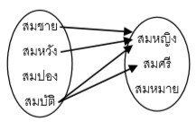
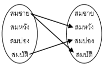

ความสัมพันธ์และฟังก์ชัน
ความสัมพันธ์ คือ การนำสองสิ่งมาเขียนเป็นคู่อย่างมีลำดับ เช่น (3, 2), (-1, 0), (สมชาย, 5) เป็นต้น การสลับตำแหน่งของคำในคู่อันดับ จะทำให้กลายเป็นคนละอัน กล่าวคือ (3, 2) ≠ (2, 3) กล่าวคือ คู่อันดับ 2 คู่ จะเท่ากันได้ ก็เมื่อ สมาชิกตัวหน้าเท่ากัน
และ สมาชิกตัวหลังเท่ากัน ตัวอย่าง จงหาค่า x และ y ที่ทำให้ (3, x + y) = (y + 1, 5y)
วิธีทำ คู่อันดับจะเท่ากันได้ เมื่อสมาชิกตัวหน้าเท่ากัน และสมาชิกตัวหลังเท่ากัน
 ดังนั้น คำตอบ คือ x = 8 และ y = 2
ดังนั้น คำตอบ คือ x = 8 และ y = 2
ผลคูณคาร์ทีเชียน
ความสัมพันธ์ คือ ความเกี่ยวข้องกัน นะหว่างกลุ่มสองกลุ่ม เช่น

ความสัมพันธ์ “แอบชอบ” ระหว่าง กลุ่มผู้ชาย ซึ่งประกอบด้วย สมชาย สมหวัง สมปอง และ สมบัติ
ไปยัง กลุ่มผู้หญิง ซึ่งประกอบด้วย สมหญิง สมศรี และสมหมาย
โดย สมชาย แอบชอบ สมหญิง
สมหวัง แอบชอบ
สมหญิง
และ สมบัติ แอบชอบ สมศรีและสมหญิง
สิ่งที่ต้องระวังคือ ความสัมพันธ์ส่วนใหญ่ “สลับที่ไม่ได้”
และในบางกรณี กลุ่มหน้า กับกลุ่มหลัง อาจเป็นกลุ่มเดียวกันได้ด้วย

เช่น ในการแข่งขันชกมวยแบบแบทเทิลรอยัล ในกลุ่มผู้ชาย
พบว่า สมชาย ชกโดน สมหวังและสมบัติ
และ สมบัติ ชกโดนสมปอง
จะสามารถเขียนแผนภาพได้กลุ่มหน้ากับกลุ่มหลังเป็นกลุ่มเดียวกัน ดังรูป
ในกรณีที่ กลุ่มหน้ากับกลุ่มหลังเป็นกลุ่มเดียวกัน เราจะเรียกว่า ความสมพันธ์ “ในกลุ่ม”
ทำแบบทดสอบ